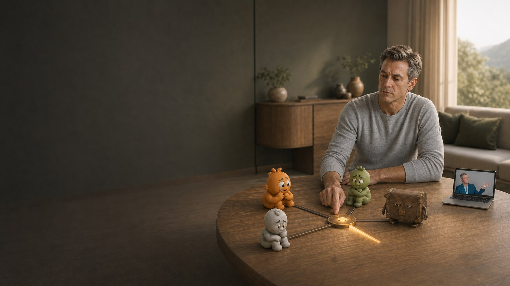
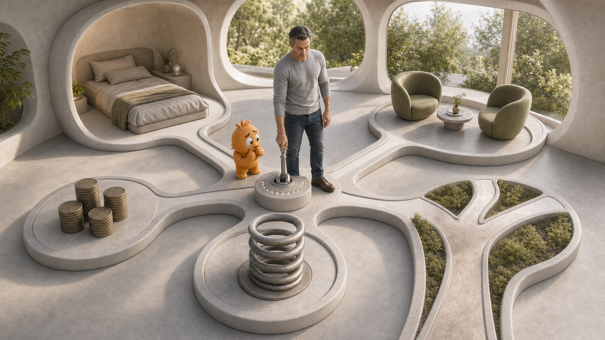
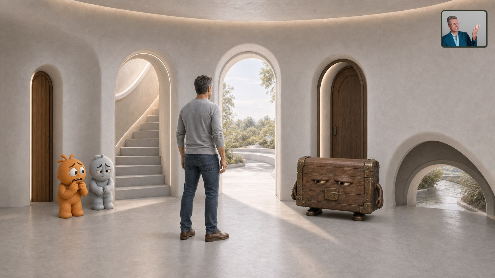
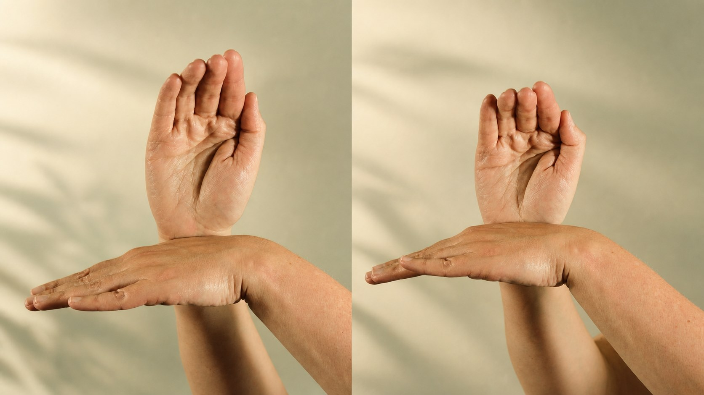
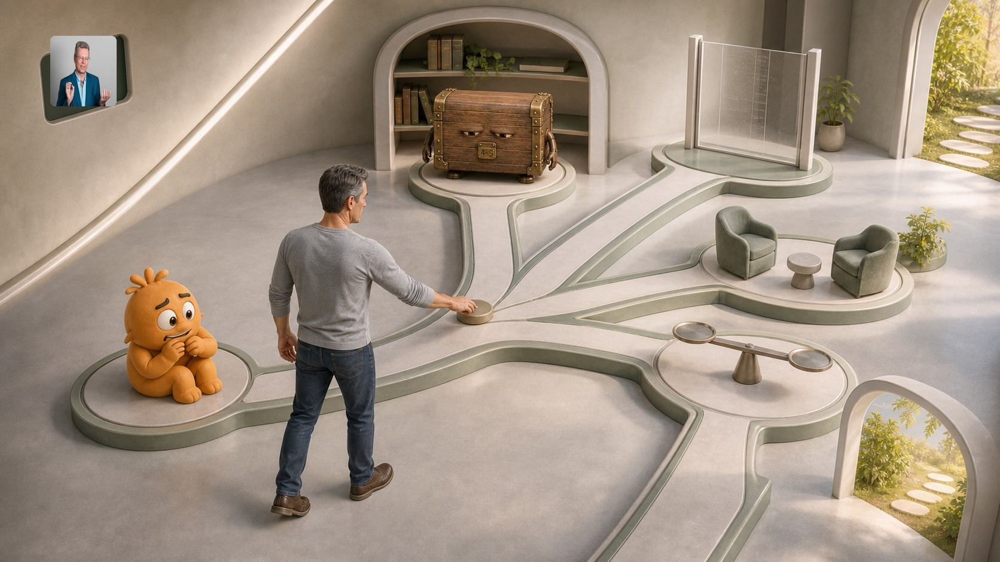
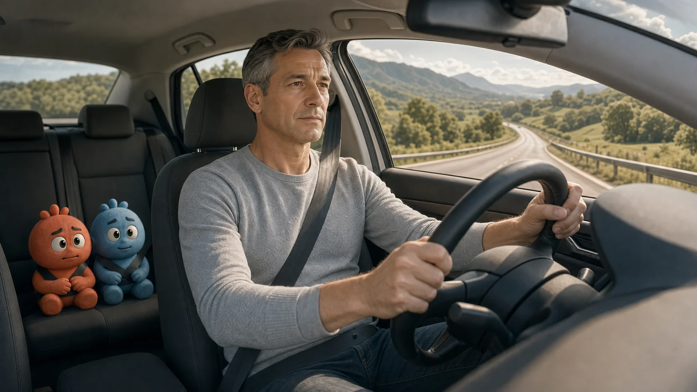
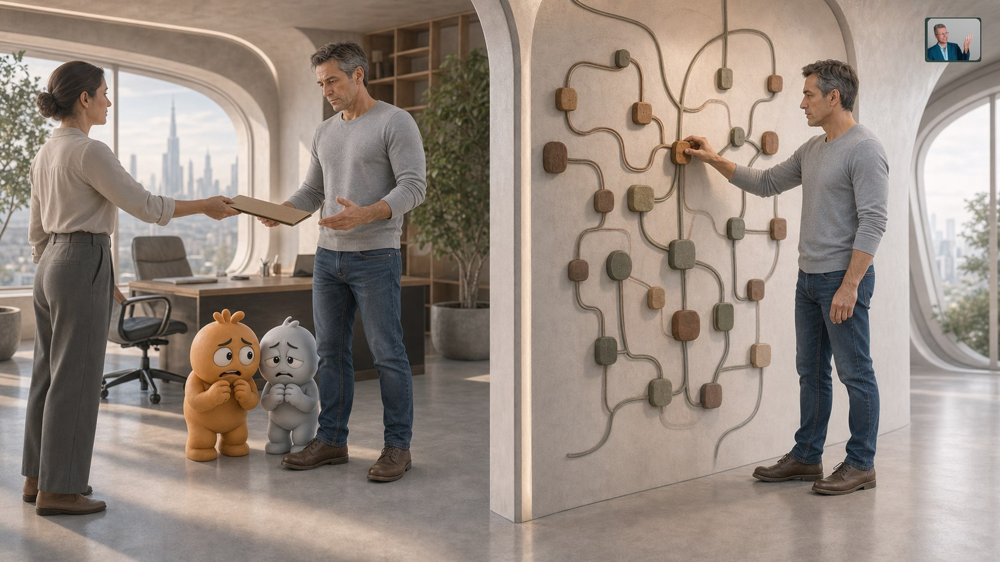
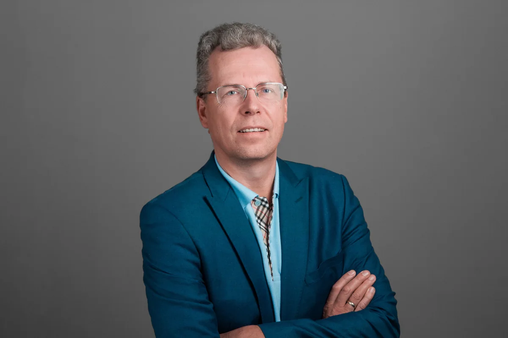
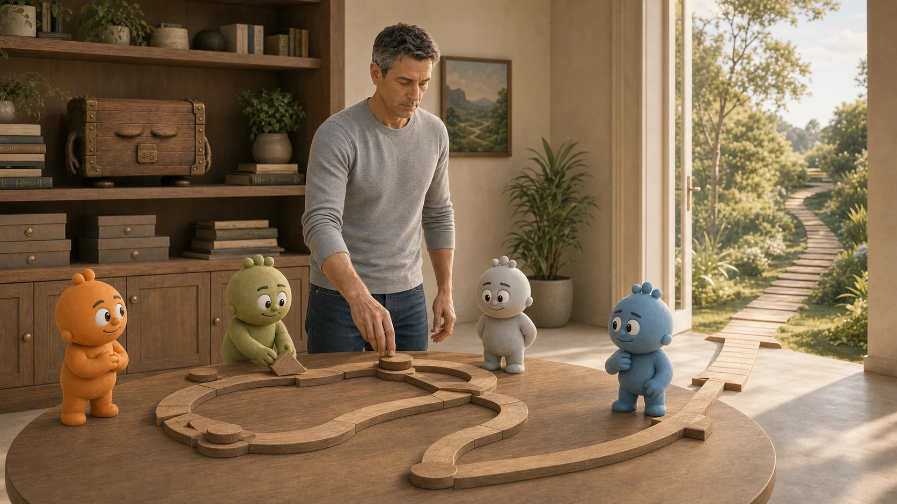

Тревога и ожидание плохого
Мысли постоянно проверяют будущее на опасность, а телу трудно перейти в спокойный режим.

Off-Switch 1:1 с УгисомИндивидуальная программа остановки автоматических реакцийТри месяца с автором метода
Метод Off-Switch помогает остановить автоматические эмоциональные и телесные реакции, которые продолжают управлять решениями после того, как сама ситуация уже закончилась. В индивидуальной работе Угис видит, как связаны ваши реакции, и выстраивает маршрут вокруг фактов вашей жизни.
Личный маршрут — самый точный и индивидуальный способ пройти метод с его автором.
Кнопка откроет Telegram Угиса. На 40-минутной встрече вы вместе проверите, подходит ли личный формат вашей задаче, и наметите, с чего лучше начать.
Главная трансформация.
Ваша главная проблема перестаёт управлять вашей жизнью.С какими запросами приходят
Можно прийти с одной конкретной реакцией или с несколькими темами, которые влияют друг на друга. Ориентиром становится то, как проблема проявляется в вашей обычной жизни.
Работа 1:1 — самый точный способ пройти метод Off-Switch: маршрут строится под вашу систему реакций, а каждый следующий шаг выбирается по тому, что реально изменилось после предыдущей работы.
Мысли постоянно проверяют будущее на опасность, а телу трудно перейти в спокойный режим.
Сердце, дыхание, головокружение или внутреннее напряжение включаются раньше, чем появляется выбор.
Нагрузка уже уменьшилась, а силы, сон и способность нормально восстанавливаться всё ещё не вернулись.
Важный разговор, поездка, новая работа или собственный проект снова откладываются.
Сначала трудно сказать прямо, а после попытки защитить себя появляется вина или желание всё отменить.
Событие осталось в прошлом, но похожий голос, место или ситуация до сих пор запускают прежнюю реакцию.
Меняются люди и обстоятельства, а недоверие, обида, отдаление или привычная защита возвращаются.
Хочется снова водить, работать, путешествовать, спать, говорить или делать то, что стало слишком трудно.
Когда темы связаны
Бессонница, конфликт, страх решения и напряжение в теле могут выглядеть как отдельные проблемы. Иногда их поддерживает одна автоматическая реакция или один набор связанных эпизодов.

Например, тяжёлое воспоминание усиливает напряжение, напряжение ухудшает сон, а недосып делает разговоры и решения ещё сложнее.
В отношениях она звучит как обида, в работе — как избегание, в теле — как сжатие, а ночью становится бесконечным прокручиванием.
Угис помогает увидеть всю систему и выбрать реакцию или эпизод, изменение которых освободит движение в других частях жизни.
Как выбирается начало работы
Угис помогает определить, с какой реакцией или эпизодом работать сначала, чтобы первый результат открыл дорогу следующим изменениям.

На изображении несколько дверей ведут к разным частям одной проблемы. Их проходят по очереди. Сначала выбирается реакция или конкретный эпизод, который сейчас даст наибольший эффект. Остальные темы остаются в карте и получают своё место позже.
Смотрим шире паттерна, с которым человек пришёл.
Берём эпизод или реакцию, изменение которых даст наибольший сдвиг.
Следующий шаг определяется после проверки результата в жизни.
Инструмент и стратегия
В личной работе техника Off-Switch используется внутри индивидуального маршрута. После снижения конкретной реакции Угис проверяет, что изменилось в реальной ситуации, что осталось и какая тема требует внимания дальше.

Конкретный телесный инструмент. Положение рук помогает работать с уже включившейся эмоциональной или телесной реакцией.
Телесная техника даёт человеку конкретное действие в момент реакции. Ценность личной работы раскрывается в точности решений после каждого такого изменения: куда двигаться дальше, что проверять в жизни и какой связанный эпизод брать следующим.
Снижает уже включившуюся реакцию.
Определяет следующий точный шаг после изменения.
Техника меняет конкретную реакцию. Личный маршрут связывает отдельные изменения в новую логику действий.
Работа с автором метода
Индивидуальный маршрут уточняется после каждой работы. Меняются состояние человека, его решения и реальные ситуации, поэтому следующий этап определяется по тому, что стало возможным и что проявилось дальше.

Работа начинается с реакции, которая сейчас сильнее всего удерживает систему.
Техника применяется к конкретной эмоции, воспоминанию или телесному состоянию.
Сон, разговор, поездка или решение показывают, что действительно стало другим.
Угис выбирает следующий шаг по реальному результату предыдущего этапа и событиям недели.
История клиента
Результат: клиент снова сел за руль, постепенно расширил маршруты и вернул поездки в обычную жизнь.

После эпизода паники человек мог отъехать от города лишь на несколько миль. Напряжение начиналось ещё до поездки, а ожидание нового приступа сокращало маршрут.
Угис увидел связанную систему: хроническое напряжение, память о приступе и страх его повторения. Сначала снизили этот общий фон, затем реакцию на дорожный эпизод.
Клиент постепенно увеличивал расстояние: примерно 15, 100 и 800 миль. Изменение он проверял реальными поездками.
В трекере 21 показатель по шкале от 0 до 5; максимальная сумма — 105. Чем ниже итог, тем меньше человек оценивает общую нагрузку. История анонимизирована, а результаты у разных людей могут отличаться.
Личный опыт клиентов
Результат личной работы проверяется между встречами: в сне, поездке, разговоре, энергии и способности снова двигаться к своим задачам.
Julia · 2:20
Жизненное изменение: стало легче работать, строить отношения и смотреть на следующие задачи.
Ключевой сдвиг: снова появились силы двигаться дальше.
Через три месяца Julia отметила больше энергии и фокуса, большую открытость в отношениях и спокойное отношение к будущим задачам.
Ilmas · 2:19
Жизненное изменение: рабочая поездка прошла спокойно, а сон начал восстанавливаться.
Ключевой сдвиг: появилась надежда вернуться к нормальному сну.
После аварии Ilmas тревожился и плохо спал. Перед поездкой Угис выбрал точную практику, после которой состояние стало спокойнее.
Видео на английском языке и передают личный опыт клиентов.
Как проходят три месяца
Каждый этап маршрута определяется по тому, что изменилось в вашей жизни после предыдущей работы. Встреча задаёт точный фокус, а события недели показывают, как развивать результат дальше.

Вы вместе с Угисом выбираете реакцию, эпизод или решение, которые станут фокусом недели.
Между встречами вы применяете технику и наблюдаете изменение в конкретных ситуациях.
Разговор, сон, поездка или действие показывают, что уже изменилось и что ещё удерживает систему.
Следующая встреча начинается с фактов недели, и маршрут получает новое точное направление.

Все 12 встреч ведёт автор метода
Угис Страусс — автор метода Off-Switch и создатель практических систем работы с поведением под давлением. В личной работе он видит связанную систему реакций, решений и жизненных ситуаций.
Он помогает выбрать наиболее точный первый шаг, замечает, когда человек работает с проявлением вместо механизма, и корректирует маршрут по мере изменений в реальной жизни. Ценность личного формата — качество решений на каждом этапе и личное ведение автора метода.
Ритм личной работы
Все встречи складываются в один маршрут: каждая неделя даёт материал для следующего точного решения.
Что изменилось, где реакция вернулась и какая ситуация сейчас мешает больше всего.
В разговоре, сне, поездке, решении, работе или способности спокойно обозначить границу.
Угис выбирает дальнейший ход по тому, что действительно изменилось, а не по заранее составленному списку.
Можно подключаться из любой страны.
Каждая встреча длится 75–90 минут.
Помогает видеть динамику в повседневной жизни.
Вы применяете технику и получаете поддержку в согласованном формате.
Личный онлайн-маршрут
Три месяца личного сопровождения с автором метода: индивидуальные встречи, практика между ними, поддержка и постоянная коррекция маршрута по изменениям в реальной жизни.
12 индивидуальных Zoom-встреч, практика между сессиями и согласованная поддержка. Возможна оплата тремя платежами по €2 000.
Написать Угису в Telegram На 40-минутной Zoom-встрече вы обсудите задачу и получите рекомендацию Угиса о наиболее точном следующем шаге.Личный маршрут включает
Вопросы перед решением
Понимание объясняет происхождение реакции, но не всегда меняет её в теле и поведении. В личной работе Угис соединяет технику, смену значения и конкретное действие, которым результат проверяется в жизни.
Да. Личный формат ценен максимальной точностью и вниманием к вашей ситуации. Он подходит и для одной важной темы, и для нескольких связанных запросов.
В группе есть общий порядок работы. В личной работе Угис каждую неделю выбирает следующий шаг вместе с вами: тема, глубина, темп и действие могут меняться по ходу работы.
Вы сами определяете комфортную глубину рассказа. Для начала достаточно описать текущую реакцию и ситуацию, в которой она проявляется; дальнейший порядок вы выбираете вместе с Угисом.
Вы оцениваете силу конкретной реакции по шкале от 0 до 5 и используете трекер из 21 показателя. Главная проверка — факты жизни: сон, разговоры, поездки, решения и границы.
Да. Полная стоимость составляет €6 000. Оплату можно разделить на три ежемесячных платежа по €2 000.
Главная трансформация
Вы выходите из работы с собственным инструментом, ясностью следующего действия и способом принимать решения в реальных ситуациях.
Написать Угису о формате 1:1
Важно: если вы находитесь в остром кризисе, есть угроза безопасности или появились новые необъяснимые симптомы, сначала обратитесь за профильной медицинской или кризисной помощью.